Guida a PicSpeak
PicSpeak aiuta a comunicare con le immagini: si toccano le tessere per comporre una frase e il dispositivo la legge ad alta voce. Questa guida è per gli adulti che accompagnano la persona: genitori, insegnanti, logopedisti e terapisti.
Le tre cose da sapere
- Il bambino tocca le tessere e PicSpeak dice la parola. Non può cambiare né cancellare niente. Comporre una frase
- L’adulto tiene premuti i tre puntini in alto a destra per 3 secondi: si apre il menu con Impostazioni, Crediti e Guida. Aprire il menu
- Le impostazioni sono protette da un PIN che create voi la prima volta. Dopo 5 minuti senza tocchi si richiudono da sole. Creare il PIN
1 I numeri arancioni nelle immagini corrispondono ai numeri dell’elenco sotto ciascuna immagine. Alcune immagini vengono da un tablet, altre da un telefono: le voci sono le stesse, a volte disposte una sotto l’altra.
Iniziare
Conoscere lo schermo
PicSpeak si apre dal browser, senza installare nulla e senza account. Funziona su tablet, telefono e computer (Safari, Chrome, Edge, Firefox).
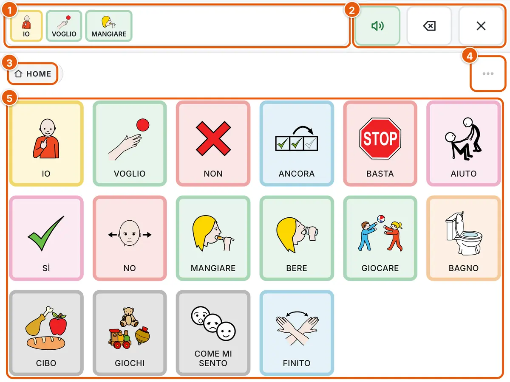
- Striscia frase: raccoglie le tessere toccate. Si può spostare in basso (vedi Aspetto) e rendere più alta (vedi Ingrandire la frase).
- Pulsanti della frase: altoparlante (legge tutta la frase), freccia con la × (toglie l’ultima parola), × (cancella tutto).
- Percorso: dice in quale pagina siete (per esempio «Home › Parole di base › Colori»). Toccate Home o il nome di una cartella per tornarci; dentro una cartella compare a sinistra la freccia ←, che riporta alla cartella da cui siete arrivati.
- Tre puntini: solo per l’adulto, si tengono premuti per aprire il menu.
- Tabella: le tessere con immagine e parola. Le tessere grigie sono cartelle e aprono un’altra pagina.
Il bambino vede solo la tabella e la frase: nessun pulsante gli permette di modificare o cancellare le tessere.
Comporre e leggere una frase
- Toccate una tessera: PicSpeak dice la parola e la aggiunge alla frase.
- Toccate una cartella (per esempio «Cibo») per aprire la sua pagina. La freccia ← torna indietro di una cartella; Home nel percorso riporta alla pagina principale.
- Toccate l’altoparlante per sentire tutta la frase.
- Per correggere toccate la freccia con la × (toglie l’ultima parola) oppure la × (cancella tutta la frase).
Toccando una parola già nella frase, PicSpeak la ripete senza toglierla.
Due gesti facoltativi, da attivare in ImpostazioniAspettoDisposizione e tocco:
- Spingi via la frase: un colpo deciso del dito sulla striscia la cancella.
- Scuoti per ricominciare: due scosse decise del tablet o del telefono riportano alla Home e cancellano la frase. Su iPad e iPhone il browser chiede il permesso di usare i sensori.
Si possono anche far leggere le parole solo alla fine, cancellare la frase da sola o tornare alla Home dopo ogni parola: vedi Decidere come si comporta la frase.
Aprire il menu dei tre puntini
- Appoggiate il dito sui tre puntini in alto a destra e teneteli premuti per 3 secondi. In cima allo schermo compare una barra blu che si riempie e la scritta «Continua a tenere premuto…».
- Quando la barra è piena si apre il menu. Un tocco veloce non fa nulla: così il bambino non lo apre per sbaglio.
- Scegliete una voce, oppure Chiudi (o il tasto Esc) per tornare alla tabella.
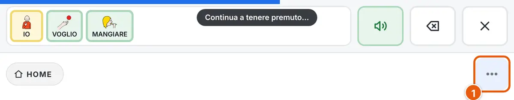

- Impostazioni: chiede il PIN e permette di modificare tutto (vedi sotto).
- Crediti: autori dei simboli, licenze e privacy. Non serve il PIN.
- Guida: apre questa pagina. Non serve il PIN.
La guida si apre anche da ImpostazioniGeneraleApri la guida.
Creare il PIN e sbloccare le impostazioni
La prima volta
- Aprite il menu e scegliete Impostazioni.
- Scrivete un PIN da 4 a 6 cifre, ripetetelo e toccate Conferma.
- PicSpeak mostra un codice di recupero: annotatelo o fotografatelo e conservatelo in un posto sicuro. Serve se dimenticate il PIN e non verrà mostrato di nuovo.
- Toccate Ho annotato il codice: le impostazioni sono sbloccate.
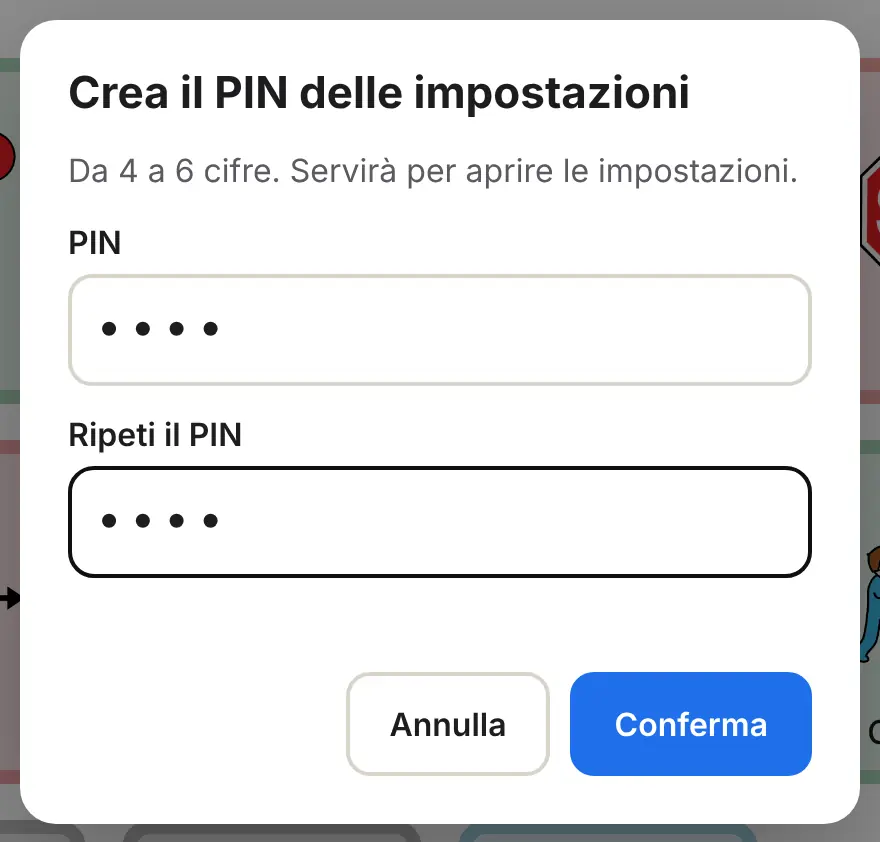
Le volte successive
Menu → Impostazioni → scrivete il PIN → Conferma.
Se il PIN è sbagliato potete riprovare subito, quante volte volete: PicSpeak non si blocca mai, nemmeno se il bambino prova tanti numeri. La comunicazione del bambino non si ferma in nessun caso. Per questo scegliete un PIN di 6 cifre difficile da indovinare: evitate 123456, cifre tutte uguali e date di nascita. Se serve una protezione più forte, usate il blocco del dispositivo (vedi Tenere PicSpeak sempre aperto e a schermo intero).
Con le impostazioni sbloccate
In alto compare una barra scura e ogni tessera ha una matita: toccandola si apre la sua modifica.

Il lucchetto aperto all’inizio della barra non è un pulsante: ricorda che le impostazioni sono sbloccate (su schermi larghi accanto c’è la scritta «Impostazioni sbloccate»). Mentre regolate la misura delle tessere, al suo posto compare «Anteprima».
- − 100% +: misura delle tessere (vedi Ingrandire o rimpicciolire).
- Impostazioni: apre tutte le categorie.
- Torna alla comunicazione (sul telefono Fine): richiude tutto e torna alla modalità del bambino.
- Toccando una tessera si apre la sua modifica (vedi Aggiungere o cambiare una tessera).

Dopo 5 minuti senza tocchi PicSpeak torna da solo alla modalità di comunicazione.
Cambiare il PIN
ImpostazioniSicurezzaCambia PIN: serve il PIN attuale.
Trovare una voce nelle impostazioni
Le impostazioni sono divise in categorie, elencate a sinistra (sul telefono una sotto l’altra: toccatene una per aprirla e Indietro per tornare all’elenco).

- Le categorie.
- Indietro: torna alla tabella (con le impostazioni ancora sbloccate).
| Generale | lingua, ricerca online dei simboli, installare come app, guida, crediti |
|---|---|
| Profili | le persone che usano PicSpeak su questo dispositivo: usare, aggiungere, duplicare, rinominare, eliminare un profilo |
| Aspetto | stili pronti, colori, sfondo, simboli, testo, celle, posizione della frase, gesti |
| Tocco e frase | pulsanti «Ops» e «Aiuto», frasi rapide, tempo di pressione, tocchi ripetuti, comportamento della frase |
| Schede | schede pronte, i miei modelli, importa ed esporta, altre app, stampa, disposizione e posizioni, colori per tipo di parola |
| Previsione | suggerimenti della parola successiva e abitudini d’uso |
| Simboli | ARASAAC, Mulberry, OpenMoji, Twemoji, foto personali |
| Voce | voce, velocità, tono, come avere una voce più naturale |
| Sicurezza | cambiare il PIN, schermo sempre acceso, schermo intero, blocco del dispositivo su PicSpeak (Accesso guidato, Fissa app) |
| Backup e ripristino | backup locale (con password facoltativa), ripristinare un backup, backup online su Dropbox, azzerare l’app (impostazioni iniziali, cancella tutto) |
| In arrivo | le funzioni previste nelle prossime versioni |
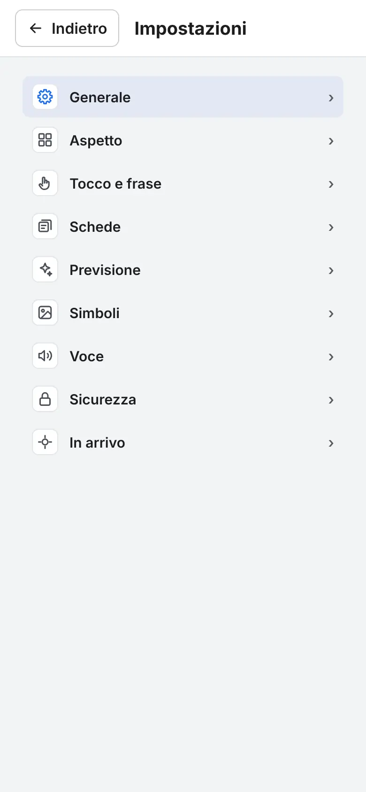
Aprire e chiudere le sezioni con la freccia
Ogni sezione delle impostazioni ha il titolo con una freccia davanti. Toccate il titolo per aprirla (la freccia diventa ▾) e toccatelo di nuovo per chiuderla (▸). Quando entrate in una categoria all’inizio sono tutte chiuse: così vedete subito l’elenco di cosa contiene e aprite solo quello che vi serve.
Ogni sezione resta come l’avete lasciata anche le volte successive: se ne aprite una, la ritrovate aperta; se la richiudete, resta chiusa. Chiudere una sezione non cambia nulla: le scelte fatte al suo interno continuano a valere.
Nella pagina di un contesto sono aperte all’inizio il nome, Quando vale e Le combinazioni del contesto; i pulsanti per salvare restano sempre visibili.
Preparare le schede
Partire da una scheda pronta
ImpostazioniSchedeSchede pronte
Sono punti di partenza costruiti secondo le indicazioni degli esperti di Comunicazione Aumentativa: poche parole di base (io, voglio, ancora, basta, aiuto, sì, no, dove?…) che servono in ogni situazione, sempre nello stesso posto perché la mano impari dove andare, colorate per tipo di parola, e cartelle per tutto il resto (cibo, giochi, persone, luoghi, corpo, vestiti, scuola…).

| Primi passi · 9 tessere | una pagina 3×3 con le prime richieste. Per iniziare, anche dai 3 anni. |
|---|---|
| Primi passi · 16 tessere e 4 cartelle | pagina 4×4 con Cibo, Giochi, Persone e Come mi sento. |
| Parole di base · 36 tessere e 7 cartelle | griglia 6×6, per tablet o telefono in orizzontale. |
| Parole di base · 60 tessere e 12 cartelle | griglia 10×6 per tablet e PC, con le domande. |
| Parole di base · 36 tessere, cartelle in alto | griglia 6×6 con le cartelle nella prima riga, le persone a sinistra, sì / finito / no in basso a sinistra e le domande a destra. |
| Parole di base · 60 tessere, cartelle in alto | griglia 10×6 con la stessa disposizione della 36 «cartelle in alto»: passando dalla 36 alla 60 le parole restano negli stessi posti. Animali e colori sono dentro Giochi. |
Le due serie «Parole di base» sono alternative: provatele entrambe e tenete quella che funziona meglio. Se cambiate idea, in Recupero c’è sempre Ripristina le schede di prima. La cartella parole piccole contiene le parole di collegamento (e, con, per, di, il, un…). I luoghi (casa, scuola, parco…) sono tessere della cartella luoghi, così «voglio andare a casa» si completa con un tocco; le azioni di ogni giorno sono dove servono: lavarsi e svegliarsi in corpo, vestirsi in vestiti, colazione, pranzo e cena in cibo. Gli oggetti e le persone della scuola sono nella cartella cose di scuola. Le schede pronte sono un punto di partenza: la scelta delle parole va adattata al bambino, meglio insieme alla logopedista.
- Toccate Usa sotto la scheda scelta.
- Scegliete Diventano le schede del bambino (sostituiscono quelle attuali) oppure Aggiungi come cartella nella Home (le schede attuali restano e se ne aggiunge una cartella).
- PicSpeak scarica una sola volta i pittogrammi (serve internet, circa 10 KB per immagine). Da quel momento funziona anche senza connessione.
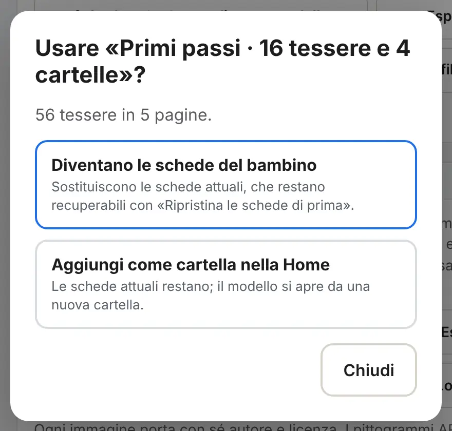
Ogni tessera di una scheda pronta si può poi cambiare, nascondere o togliere come tutte le altre.
Sostituito per sbaglio? Nella stessa pagina, sezione Recupero, c’è Ripristina le schede di prima. Se mancava internet le tessere mostrano solo la parola: appena siete collegati toccate Scarica … pittogrammi nella sezione Recupero. Con la ricerca online su Solo Wi-Fi, se PicSpeak non capisce che rete state usando non scarica nulla: i pittogrammi li scaricate voi da Recupero quando siete in Wi-Fi.
Aggiungere o cambiare una tessera
- Sbloccate le impostazioni.
- Toccate la tessera da cambiare, oppure la tessera + in fondo alla pagina per crearne una nuova (scegliendo Tessera o Cartella). Si apre la finestra di modifica.
- Scrivete la Parola e scegliete l’Immagine (Cerca simbolo oppure Foto o immagine dal dispositivo).
- Toccate Salva.
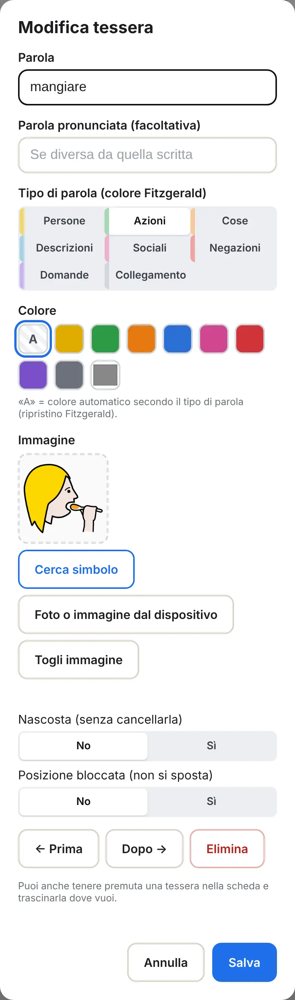
- Parola
- il testo sotto l’immagine.
- Parola pronunciata
- facoltativa: se la voce deve dire qualcosa di diverso da quello scritto.
- Tipo di parola
- dà il colore (vedi Colorare le parole per tipo). Viene proposto da solo mentre scrivete o scegliete un simbolo ARASAAC.
- Colore
- «A» usa il colore del tipo di parola; si può sceglierne un altro.
- Immagine
- Cerca simbolo, Foto o immagine dal dispositivo, oppure Togli immagine per lasciare solo la parola.
- Nascosta
- toglie la tessera dalla vista senza cancellarla.
- Posizione bloccata
- la tessera non si può spostare.
- Si trova in
- la cartella in cui sta la tessera: sceglietene un’altra per spostarla lì.
- ← Prima / Dopo →
- sposta la tessera di un posto (non compaiono se la posizione è bloccata).
- Elimina
- cancella la tessera (chiede conferma).
Per una cartella (una tessera che apre un’altra pagina) vedete Creare e sistemare le cartelle.
Con le impostazioni sbloccate, toccare un’immagine nella striscia frase la toglie dalla frase.
Spostare le tessere
- Sbloccate le impostazioni.
- Tenete premuta una tessera per mezzo secondo: si «stacca» e segue il dito (o il mouse).
- Trascinatela dove volete: le altre si spostano per farle posto.
- Lasciatela: il nuovo ordine si salva da solo.
Un tocco breve, invece, apre la modifica. In alternativa usate ← Prima e Dopo → nella modifica della tessera.
Dentro o fuori da una cartella: trascinate la tessera al centro di una cartella: la cartella si colora di blu e, lasciando, la tessera va dentro (in fondo alla sua pagina). Per portarla fuori, trascinatela sulla freccia ← o su una voce del percorso in alto (per esempio Home). Sul bordo di una cartella, invece, dopo un attimo le due tessere si scambiano di posto come al solito. In basso compare per un momento «Spostata in…».
Le tessere con la posizione bloccata hanno un lucchetto nell’angolo in alto a sinistra e non si spostano. Nelle schede pronte le tessere della Home sono tutte bloccate. Tenendo premuta una tessera bloccata si apre una finestra che lo spiega e permette di sbloccare questa tessera o tutte le tessere della pagina; poi la si sposta come le altre (vedi anche Tenere le tessere sempre allo stesso posto).
Creare e sistemare le cartelle
Una cartella è una tessera che apre un’altra pagina di tessere (per esempio «Cibo»). Le cartelle possono contenere altre cartelle.
- Sbloccate le impostazioni.
- Toccate +, in cima alla finestra scegliete Cartella, scrivete il nome e salvate.
- Toccate la cartella per entrarci (anche con le impostazioni sbloccate) e aggiungete le sue tessere con +.
- Per cambiare nome, immagine o colore della cartella toccate la matita blu nel suo angolo.
- Apri la cartella
- in cima alla finestra della cartella: entra nella cartella.
- Leggi il nome quando si apre
- Sì: aprendo la cartella la voce dice il suo nome. No: la cartella si apre in silenzio (utile per le cartelle con nomi lunghi, come quelle delle schede pronte). Le schede pronte aggiunte come cartella nella Home partono già su No.
- Si trova in
- sposta l’intera cartella, con tutto il suo contenuto, in un’altra cartella o nella Home. Le cartelle che stanno dentro questa non si possono scegliere.
Per spostare tessere dentro o fuori da una cartella trascinandole vedete Spostare le tessere.
Il percorso in alto mostra sempre da dove siete arrivati: la freccia ← torna alla cartella precedente, Home alla pagina principale.
Cercare un simbolo o usare una foto
- Nella modifica della tessera toccate Cerca simbolo.
- Scrivete una parola semplice, meglio al singolare («mela», «bere»), e toccate Cerca.
- Prima compaiono i simboli già sul dispositivo (subito, anche senza internet), poi quelli di ARASAAC e delle altre raccolte attive.
- Toccate l’immagine scelta: viene salvata sul dispositivo e funzionerà anche offline.

Per una foto (persone, oggetti e luoghi reali della persona) toccate invece Foto o immagine dal dispositivo.
Scegliere le raccolte di simboli
ImpostazioniSimboli

- ARASAAC: pittogrammi colorati, lo standard della CAA in Italia. Consigliato come base.
- Mulberry: disegni puliti, adatti anche agli adulti (circa 3,8 MB, da scaricare una volta).
- OpenMoji: emoji a linea, ottime per emozioni, cibo e oggetti (circa 3,1 MB, una volta).
- Twemoji: emoji colorate nello stile dei telefoni, familiari a molti ragazzi. Non c’è nessun pacchetto da scaricare: si cerca su internet e si salva solo l’emoji che scegliete, che poi funziona anche offline. Le immagini arrivano dal servizio jsDelivr, che non riceve la parola cercata ma vede quali emoji vengono mostrate.
- Foto personali: le più efficaci per chi riconosce meglio il reale.
In fondo all’elenco compare anche Tawasol con la scritta «In attesa»: è una raccolta che arriverà più avanti e per ora non si può attivare.
Se un simbolo non si trova provate un sinonimo o una parola più semplice. Si può anche salvare la tessera con la sola parola, o con una foto.
Colorare le parole per tipo
Ogni tessera prende il colore del suo tipo di parola (chiave di Fitzgerald modificata): aiuta a costruire la frase e a ritrovare le tessere.
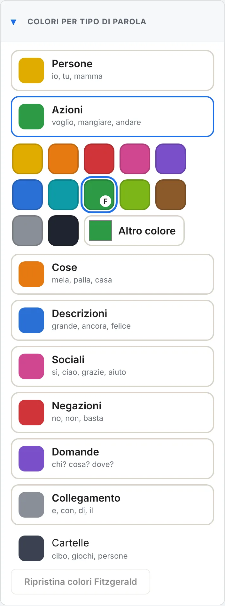
- Aprite la modifica della tessera.
- In Tipo di parola scegliete Persone, Azioni, Cose, Descrizioni, Sociali, Negazioni, Domande o Collegamento.
- Lasciate il Colore su «A» per usare il colore del tipo, oppure sceglietene un altro.
- Toccate Salva.
Per le parole note il tipo viene proposto da solo. Per togliere i colori a tutte le tessere scegliete la modalità colori «Neutro» in ImpostazioniAspetto.
Tenere le tessere sempre allo stesso posto
ImpostazioniSchedeDisposizione e posizioni
Quando una parola sta sempre nello stesso punto, con il tempo la mano ci va da sola, come sulla tastiera.

- Aprite la pagina da sistemare (per esempio una cartella), poi le impostazioni.
- In Disposizione di questa pagina scegliete:
- Automatica: le tessere si adattano allo schermo (poche tessere = tessere grandi);
- Griglia fissa: ogni tessera resta nella sua riga e colonna e scegliete quante colonne. Se nascondete o eliminate una tessera il suo posto resta vuoto e le altre non si spostano.
- Se volete, attivate Blocca la posizione di tutte le tessere: nessuno potrà spostarle per errore. Una sola tessera si blocca dalla sua modifica («Posizione bloccata»). Con le impostazioni sbloccate le tessere bloccate mostrano un lucchetto.
Su uno schermo troppo stretto (per esempio un telefono in verticale con una griglia di 6 o 10 colonne) le tessere restano nello stesso ordine ma si adattano allo schermo: per una griglia grande usate sempre lo stesso tablet, nello stesso verso. Con la griglia fissa i pulsanti − e + non cambiano la misura. Nelle schede pronte le tessere della Home sono già bloccate.
Ingrandire o rimpicciolire le tessere
- Sbloccate le impostazioni.
- Nella barra scura in alto toccate − o +: le tessere cambiano a passi del 10%.
- Mentre regolate, la pagina si mostra esattamente come la vedrà il bambino (la barra dice «Anteprima»). Il primo tocco fuori da − e + torna alla modifica.
Toccando la percentuale si torna alla misura automatica (100%, che riempie lo schermo). Le tessere non diventano mai più piccole di un dito.
Ingrandire la frase per chi vede poco
ImpostazioniAspettoDisposizione e toccoAltezza della striscia frase
Il − e il + ingrandiscono le tessere della tabella. Per ingrandire anche la frase scegliete l’altezza della striscia:
- Normale: come all’inizio.
- Grande: immagini e parole della frase più grandi.
- Molto grande: per chi vede poco; le parole della frase si leggono da lontano.
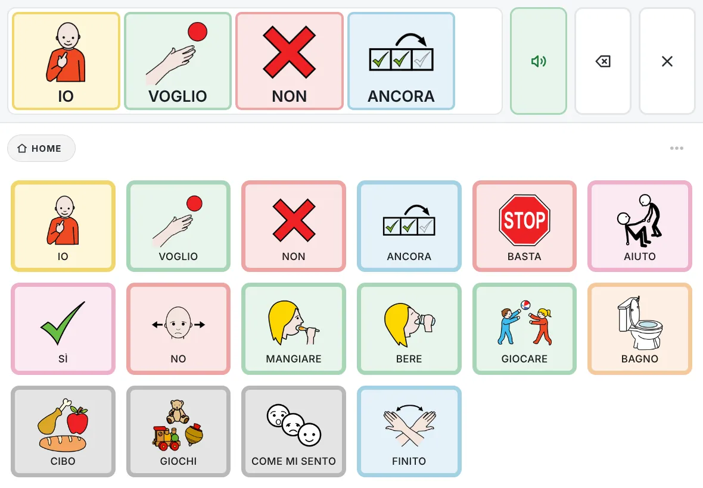
Le tessere della tabella si adattano da sole allo spazio che resta. Sul telefono in verticale con «Molto grande» nella striscia si vedono due o tre parole alla volta: le altre si raggiungono facendo scorrere la striscia. Sul telefono in orizzontale lo schermo è basso: la tabella scorre in su e in giù invece di rimpicciolire le tessere.
Cambiando stile pronto l’altezza scelta resta.
Per chi vede poco, unite la striscia più alta allo stile «Alto contrasto» e al testo «Grande» o «Molto grande» (vedi Aspetto).
Adattare PicSpeak alla persona
Usare PicSpeak con più persone (profili)
ImpostazioniProfili
Sullo stesso dispositivo possono esserci più persone, per esempio i bambini seguiti da una terapista o da un’insegnante. Ogni profilo ha le sue schede, i suoi contesti, le sue abitudini d’uso, il suo aspetto, la sua voce e le sue opzioni di tocco e frase. Il PIN è uno solo, quello dell’adulto.
Anche le foto personali restano di ogni profilo: cercando un simbolo si trovano solo le foto caricate in quel profilo o già usate nelle sue schede, mai quelle di un altro bambino. I simboli delle raccolte (ARASAAC e gli altri) invece sono in comune e si scaricano una volta sola.
PicSpeak si apre sempre sull’ultimo profilo usato, senza chiedere niente: chi comunica vede solo le sue schede e non può cambiare profilo. Quando i profili sono più di uno, nella barra delle impostazioni sbloccate compare il nome del profilo in uso, così si modificano sempre le schede della persona giusta.
Anche nelle Impostazioni, accanto al titolo in alto, c’è sempre il nome del profilo in uso, scritto in maiuscolo su uno sfondo azzurrino: le scelte che fate (aspetto, voce, previsione e le altre) valgono solo per quel profilo. Se il profilo non ha ancora un nome compare SENZA NOME: per dargliene uno toccate Rinomina nella pagina Profili.
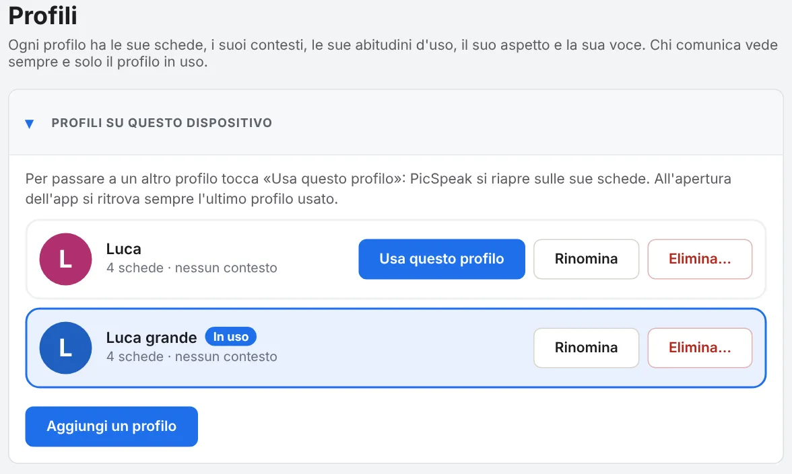
- Passare a un altro profilo: toccate Usa questo profilo accanto al nome. PicSpeak si riapre sulle sue schede e resta nella pagina Profili, senza chiedere di nuovo il PIN.
- Aggiungere un profilo nuovo: toccate Aggiungi un profilo, scrivete il nome e toccate Crea e usa questo profilo. Parte dalle schede della prima apertura, con aspetto e voce iniziali; le schede pronte, come Base 36 o Base 60, si scelgono poi in Schede.
- Duplicare un profilo: toccate Duplica accanto al profilo da copiare, anche se non è quello in uso, scrivete il nome e toccate Duplica. Il nuovo profilo è uguale all’originale (schede con le tessere negli stessi posti, contesti, abitudini d’uso, aspetto e voce) e compare nell’elenco; l’originale non cambia. Per usarlo toccate Usa questo profilo.
- Cambiare il nome: toccate Rinomina. Il nome lo vede solo l’adulto: meglio un soprannome o le iniziali che nome e cognome.
- Eliminare un profilo: toccate Elimina…. Si cancellano per sempre le sue schede, i suoi contesti, le abitudini d’uso, il suo aspetto e la sua voce, e le foto usate solo da quel profilo; gli altri profili e le immagini in comune restano. Per il profilo in uso PicSpeak propone prima di salvarne un backup; per gli altri, se volete conservarne una copia, prima usate quel profilo e salvate un backup. Per confermare servono il PIN e la parola ELIMINA. Se eliminate il profilo in uso, PicSpeak passa a un altro profilo. Con un solo profilo il pulsante non c’è: per ricominciare da zero c’è Cancella tutto.
Far crescere la tabella insieme alla persona. Per i cambiamenti di tutti i giorni restate sullo stesso profilo: aggiungete tessere o nascondetele e mostratele un po’ alla volta, senza spostare quelle che la persona conosce già (vedi Tenere le tessere sempre allo stesso posto). Per un passo più grande, per esempio una griglia con molte più tessere, usate Duplica: la copia ha le tessere negli stessi posti e le stesse abitudini d’uso, così i suggerimenti non ripartono da zero. Preparate con calma la copia e passate a quella quando la persona è pronta; il profilo di prima resta come riserva finché non lo eliminate.
Il backup salva il profilo in uso. Ripristinando un backup potete scegliere se crearne un profilo nuovo, senza toccare quello in uso, oppure metterlo al posto del profilo in uso (vedi Fare un backup e ripristinarlo).
Aggiungere «Ops», «Aiuto» e frasi rapide
ImpostazioniTocco e frasePulsanti rapidi
Sono pulsanti sempre visibili, in ogni pagina, accanto al percorso «Home» (sul telefono in una riga sotto). Parlano subito e non entrano nella frase. All’inizio sono spenti.
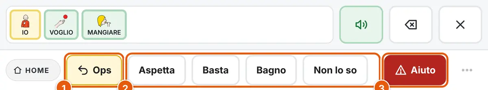
- Ops: dice «Ops, ho sbagliato» e toglie l’ultima parola dalla frase. Un modo semplice per correggersi da soli.
- Frasi rapide: fino a 6 frasi brevi da dire al volo.
- Aiuto (rosso): dice «Ho bisogno di aiuto!». Con il suono di allarme prima suonano tre note forti, per farsi sentire da lontano. Alzate il volume del dispositivo.
- Mettete su Sì i pulsanti che volete: Pulsante «Ops», Pulsante «Aiuto» (ed eventualmente Suono di allarme), Frasi rapide.
- Per le frasi rapide: cambiate il testo scrivendo nei campi, toccate Togli per toglierne una, scrivete nell’ultimo campo e toccate Aggiungi per aggiungerne una.
- Tornate alla comunicazione: i pulsanti sono nella riga del percorso. Se non entrano tutti, la riga scorre di lato.
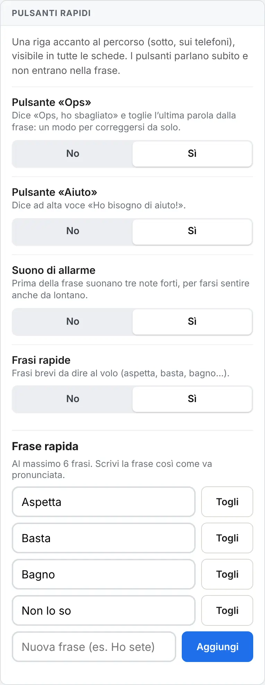
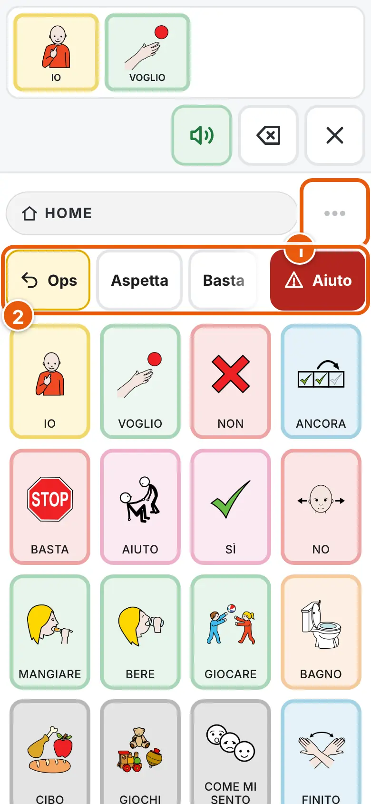
Aiutare chi ha tremori o tocca per sbaglio
ImpostazioniTocco e fraseTocco

- La tessera si sceglie «al rilascio» (quando si alza il dito: si può ancora scivolare via se si è sbagliato) oppure «al tocco» (appena si appoggia il dito: più veloce).
- Tenere premuto (0,3 – 1,5 secondi): per scegliere bisogna tenere il dito sulla tessera; intanto la tessera si riempie di azzurro dal basso. Alzando il dito prima non succede nulla. Piccoli movimenti del dito sono tollerati.
- Ignora i tocchi ripetuti (0,5 – 2 secondi): dopo una scelta gli altri tocchi non contano. Evita le parole doppie quando il dito rimbalza.
Queste regole valgono solo mentre il bambino comunica: con le impostazioni sbloccate le tessere si aprono con un tocco normale.
Decidere come si comporta la frase
ImpostazioniTocco e fraseFrase
- Pronuncia: «Ogni parola» (si sente subito ogni tessera) oppure «Solo la frase» (le tessere si aggiungono in silenzio e si sentono toccando l’altoparlante). Utile per chi costruisce frasi lunghe. Con «Ogni parola», se si toccano più tessere di seguito le parole si sentono una dopo l’altra, senza che la seconda tagli la prima. Toccando molte tessere a raffica la voce salta qualche parola per non restare indietro; l’altoparlante (leggi la frase) e il cestino (cancella) interrompono subito la voce.
- Cancella dopo la lettura: quando la voce ha finito di leggere la frase, la striscia si svuota da sola.
- Torna alla Home: dopo una parola presa in una cartella (per esempio «mela» in «Cibo») si torna da soli alla pagina principale.
La posizione della striscia (in alto o in basso) e dei suoi pulsanti (a destra o a sinistra, per chi usa la mano sinistra) si sceglie in ImpostazioniAspettoDisposizione e tocco.
Suggerire la parola successiva
ImpostazioniPrevisione
PicSpeak impara quali parole il bambino mette una dopo l’altra (per esempio «io → voglio → mangiare») e può evidenziare con un bordo blu le tessere che probabilmente userà subito dopo, oppure la cartella che le contiene. Le tessere non si spostano e non cambiano misura.
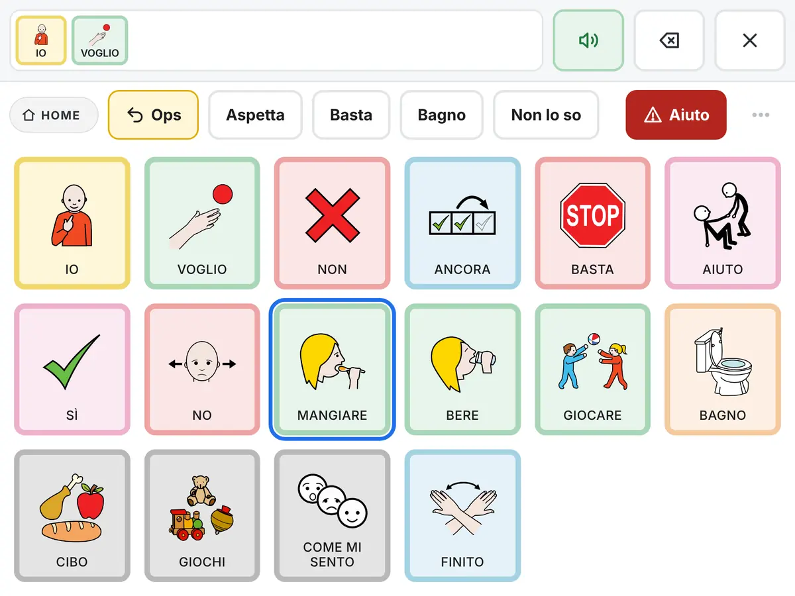
- Mettete Mostra i suggerimenti su Sì (all’inizio è spento).
- In Stile dei suggerimenti scegliete come mostrarli (vedi sotto).
- Con Altre tessere trasparenti su Sì le tessere non suggerite diventano chiare: si può aggiungere al contorno o allo sfumato, e gli effetti si sommano.
- Subito sotto, in Trasparenza, scegliete quanto devono diventare chiare con i pulsanti − e +, da 10% a 90% (all’inizio è al 50%): con una percentuale più alta le tessere non suggerite si vedono meno. Le tessere di esempio in fondo alla sezione mostrano subito l’effetto.
- In Spessore del contorno e Colore del contorno regolate il bordo: più spesso si vede meglio; scegliete un colore diverso da quelli delle tessere.
- In Tessere evidenziate scegliete quante: da 1 a 3 con il contorno semplice, 3, 5 o 10 con gli altri stili.
- Lasciate acceso Registra le abitudini (lo è fin dall’inizio): i suggerimenti compaiono dopo che una sequenza è stata usata almeno un paio di volte di recente.

| Contorno | un bordo intorno alle tessere suggerite (da 1 a 3). |
|---|---|
| Sfumato | fino a 10 tessere: il bordo è più deciso per le parole usate più spesso e più leggero per le altre, così disturba meno. |
| Solo suggerite | si vedono solo le tessere suggerite; le altre spariscono ma lasciano vuoto il loro posto, quindi nessuna tessera si sposta né cambia misura. Il pulsante Tutto accanto alla frase mostra di nuovo la scheda intera fino alla parola successiva. Se non ci sono suggerimenti abbastanza sicuri, la scheda resta intera. |
Con Altre tessere trasparenti le tessere non suggerite diventano chiare ma restano al loro posto e si possono toccare; quanto chiare lo decidete voi con Trasparenza. Per un bambino che si distrae facilmente può servire una percentuale alta; se invece deve poter trovare anche le altre parole, meglio restare intorno al 50%. Insieme allo Sfumato le parole più probabili risaltano di più e le altre restano comunque a portata di mano.
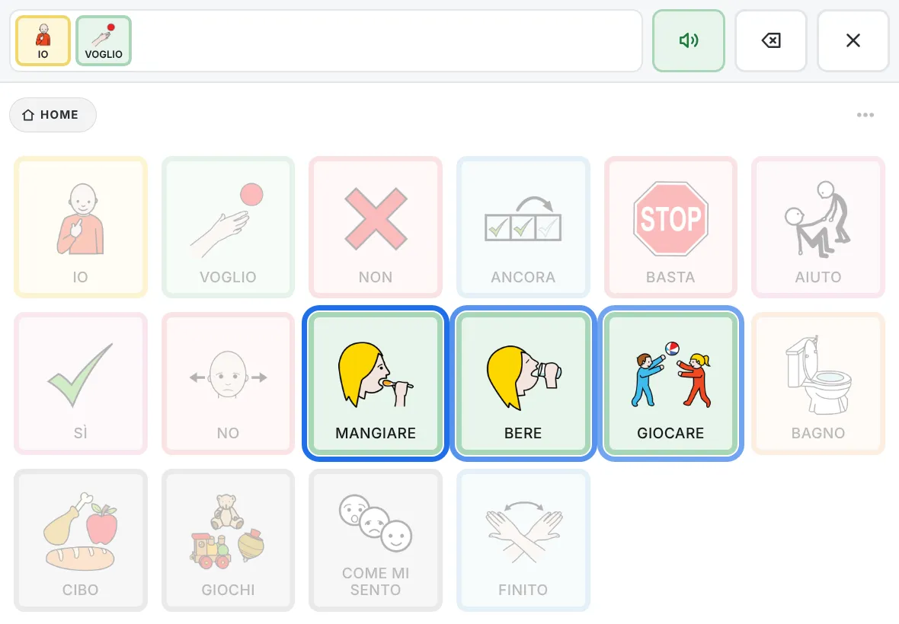
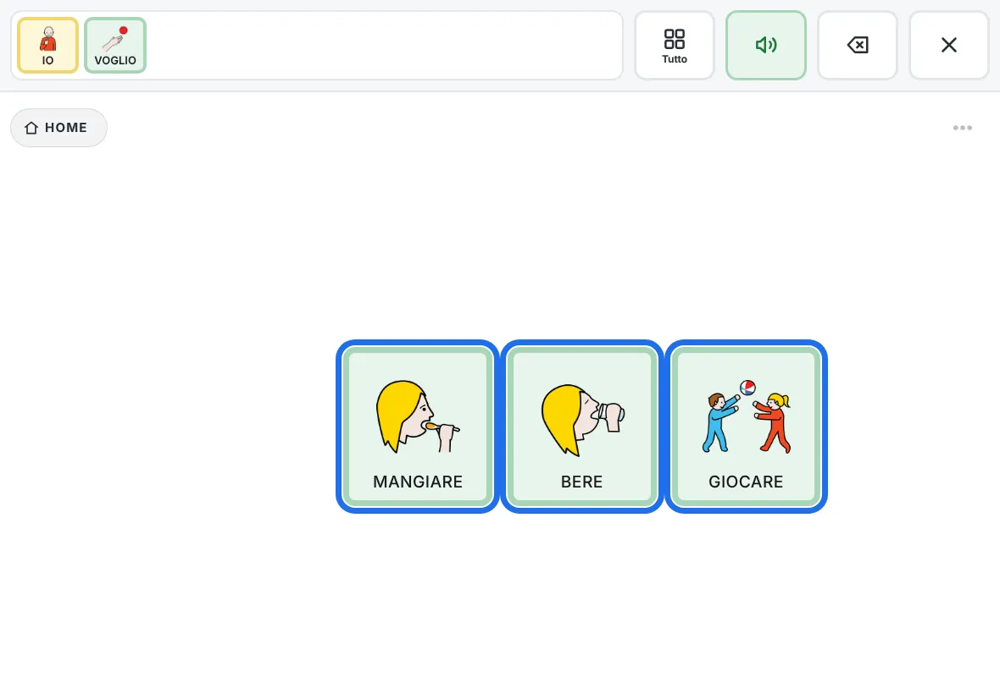
- Si registrano solo le tessere toccate in comunicazione, mai durante la modifica.
- Le abitudini recenti contano di più; quelle vecchie si affievoliscono da sole in qualche settimana (per esempio, finita la vacanza al mare). Contano anche l’ora del giorno e i contesti.
- PicSpeak non registra ogni singolo tocco: per ogni giorno tiene solo quante volte ogni coppia di parole è stata usata in ciascuna ora. Così l’archivio resta leggero anche dopo anni.
- Nella stessa pagina vedete quante parole sono state registrate, quanti giorni d’uso e quanto spazio occupano, il contesto attivo in quel momento, e potete cancellare le abitudini registrate (i contesti, le combinazioni di base e quelle dei contesti pronti restano).
Partire subito con le combinazioni di base
All’inizio PicSpeak non conosce ancora le abitudini del bambino, quindi non suggerisce nulla. Per avere suggerimenti fin dal primo giorno:
- In PrevisioneAbitudini d’uso mettete Combinazioni di base su Sì (all’inizio è spento).
- Si aggiungono circa 120 combinazioni di parole di base, scelte tra le più usate dai bambini piccoli e a scuola: per esempio «io → voglio», «voglio → bere», «non → voglio», «ancora → giocare», «mi fa male → pancia».
- Hanno pesi bassi (2, 3 o 4): bastano due o tre usi veri perché le abitudini del bambino passino davanti. Le combinazioni che il bambino non usa si spengono da sole in qualche settimana.
- Funzionano con le schede pronte Parole di base (36 o 60 tessere), nella lingua scelta per PicSpeak (italiano o inglese). Se una parola non c’è nella vostra scheda, quella combinazione semplicemente non compare.
- Mettendo No si tolgono tutte; rimettendo Sì ripartono da capo. Se cambiate la lingua di PicSpeak, mettete No e poi di nuovo Sì per averle nella nuova lingua (lo stesso vale per i contesti pronti: eliminateli e aggiungeteli di nuovo).
- Non compaiono tra Le sequenze più frequenti, che mostrano solo le abitudini vere del bambino.
Preparare le parole prioritarie (per il terapista)
La sezione Esporta e importa le abitudini si apre toccando il suo titolo (con la freccia ▸).
- In Esporta e importa le abitudini toccate Esporta le abitudini (CSV): si scarica un file che si apre con Excel, Numbers o Fogli Google.
- Ogni riga ha quattro colonne: parola precedente, parola, peso e contesto. «(inizio)» vuol dire inizio della frase. Più alto è il peso, prima viene suggerita la parola; un suggerimento compare da circa 1,5 in su. Peso 0 toglie la coppia.
- Con la colonna contesto vuota la riga vale sempre. Se scrivete il nome di un contesto (per esempio «SCUOLA»; maiuscole e minuscole non contano), la riga vale per quel contesto, come se l’aveste cambiata nella sua pagina; il contesto deve già esistere su questo dispositivo. I file con tre colonne, esportati prima, si possono ancora importare.
- Aggiungete o cambiate le righe e salvate il file sempre come CSV.
- Toccate Importa abitudini da file e scegliete Aggiungi alle attuali (cambiano solo le coppie del file) oppure Sostituisci i pesi (si tolgono prima i pesi importati in passato e le modifiche fatte a mano nei contesti). Lo storico d’uso giorno per giorno non viene mai cancellato dall’importazione.
Le parole si scrivono come sulle tessere (maiuscole e minuscole non contano). Anche i pesi importati si affievoliscono col tempo come le abitudini vere, se il bambino non usa quelle parole.
Il file contiene le abitudini del bambino: condividetelo solo con persone di fiducia.
Spostare le abitudini e i contesti su un altro dispositivo
Abitudini d’uso e contesti viaggiano con il backup completo, insieme alle schede. Sul nuovo dispositivo aprite il backup con Apri backup…; se volete riportare solo questa parte, scegliete Scegli cosa ripristinare e tenete solo Abitudini d’uso e contesti. Con Apri backup… si aprono anche i file «storico e contesti» salvati con le versioni precedenti di PicSpeak.
Come funziona, con qualche esempio
PicSpeak tiene un solo archivio delle abitudini: per ogni giorno e per ogni ora, quante volte ogni coppia di parole è stata usata. Da lì nascono i suggerimenti. I contesti non hanno un archivio loro: sono un filtro su queste stesse abitudini, che fa salire le parole di un certo momento.
- Le abitudini da sole. Ogni mattina verso le 8 il bambino compone «voglio → latte». Dopo un paio di giorni, quando a quell’ora tocca «voglio», Latte viene suggerito per primo. Il pomeriggio compone «voglio → giocare»: la stessa tessera «voglio» porta a un suggerimento diverso secondo l’ora. Se un’abitudine si perde, per esempio non chiede più il biberon, pesa sempre meno e sparisce dai suggerimenti.
- Un contesto settimanale. Create «SCUOLA» dal lunedì al venerdì dalle 8 alle 13, accensione automatica. In quegli orari si accende da solo e fa salire le combinazioni che il bambino usa a scuola, come «andare → bagno» o «finito → merenda», comprese quelle dell’anno scorso. Non c’è niente da insegnargli: impara da ciò che il bambino dice in quegli orari.
- Un periodo dell’anno. Create «MARE» come periodo dal 1° luglio al 31 agosto e, in Storico usato, scegliete il periodo preciso delle due settimane di mare dell’anno scorso. Tornati in spiaggia riaffiorano «voglio → secchiello» o «andiamo → acqua», parole che a casa non si usano.
- Una parola nuova. «Compagni» non è ancora nelle abitudini: aggiungetela a mano a SCUOLA con Aggiungi una combinazione e un peso più alto, e verrà suggerita da subito. Quando il bambino comincerà a usarla davvero, il suo uso prenderà il sopravvento.
- Un contesto preparato da altri. La logopedista crea «TERAPIA», aggiunge le combinazioni su cui sta lavorando e tocca Esporta questo contesto. A casa lo importate: prima di confermare vedete nome, orari, prevalenza e le combinazioni preparate (vedi Dare un contesto a un’altra persona).
Tutto viene calcolato su questo dispositivo, anche senza internet: nessun dato viene inviato.
Dare più peso alle parole di un momento (contesti)
ImpostazioniPrevisioneContesti
Un contesto è un momento ricorrente della vita del bambino: la scuola dal lunedì al venerdì, la logopedia il martedì pomeriggio, le vacanze al mare. Quando un contesto è acceso, le combinazioni di parole usate in quel momento vengono suggerite di più. Le altre parole non vengono mai escluse.
- Toccate Nuovo contesto e date un nome, per esempio «SCUOLA»: il nome si scrive sempre in maiuscolo, anche se digitate in minuscolo.
- In Quando vale scegliete Giorni e orari (i giorni della settimana e le ore, dalle… alle…, a fasce di un’ora; una fascia può passare la mezzanotte, per esempio dalle 18 alle 6: le ore dopo mezzanotte appartengono al giorno in cui la fascia comincia, quindi «venerdì dalle 18 alle 6» vale fino a sabato mattina) oppure Periodo dell’anno (per esempio dal 1 al 15 giugno, ogni anno).
- Se il contesto vale in più momenti, toccate Aggiungi una fascia: ogni fascia ha i suoi giorni e i suoi orari. Per esempio «PASTI» dalle 12 alle 14 e dalle 19 alle 20, oppure «GIOCO» dal lunedì al venerdì dalle 16 alle 19 e il sabato e la domenica dalle 9 alle 12. Si possono avere fino a 6 fasce; Togli questa fascia ne toglie una. Il contesto è acceso quando l’ora cade in una qualsiasi delle sue fasce.
- In Accensione scegliete Automatica (il contesto si accende da solo in quei giorni e orari), Sempre acceso (per esempio il primo giorno di mare, se quest’anno le date sono diverse) oppure Spento.
- In Storico usato lasciate Come la regola per prendere le parole usate negli stessi giorni e orari, oppure scegliete Periodo preciso e indicate le date, per esempio le due settimane di mare dell’anno scorso.
- In Prevalenza scegliete quanto devono pesare le parole del contesto: Poca, Media o Molta (vedi sotto).
- Toccate Salva il contesto.
Storico usato e Prevalenza sono nella sezione Da quali dati, chiusa all’inizio: toccate il titolo per aprirla. Se non la cambiate, il contesto usa lo storico degli stessi giorni e orari della regola, con prevalenza Media: per iniziare va bene così.
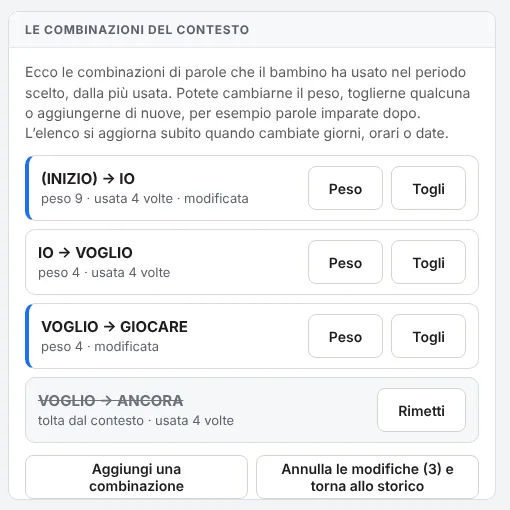
Partire da un contesto pronto
In fondo alla pagina dei contesti, Contesti pronti propone otto contesti tipici già preparati: CASA, SCUOLA, PASTI, GIOCO, BAGNO E IGIENE, FUORI E PARCO, TERAPIA ed ESTATE E MARE (in inglese HOME, SCHOOL…). Ognuno ha orari di esempio e da 11 a 22 combinazioni di parole adatte a quel momento, con pesi bassi. Se la sezione è chiusa, toccate il suo titolo, con la freccia ▸, per vedere l’elenco.
- Toccate Aggiungi accanto al contesto che vi serve: compare nell’elenco dei vostri contesti, con la scritta «Contesto pronto», e si accende da solo nei suoi orari.
- Toccate Modifica e adattatelo: orari, fasce, nome, prevalenza, combinazioni. Se non vi serve ancora, mettete Accensione su Spento.
- Per tornare com’era all’inizio toccate Riporta all’originale: tornano nome, orari e combinazioni iniziali e le modifiche fatte si perdono (le abitudini registrate restano). Se volete tenere la vostra versione, prima toccate Esporta questo contesto.
- I contesti pronti partono con la prevalenza Poca: aiutano all’inizio, poi conta soprattutto quello che il bambino usa davvero in quel momento. Basta un uso nel contesto per superare una combinazione pronta.
- Come le combinazioni di base, sono pensati per le schede pronte Parole di base.
- Se avete già un contesto con lo stesso nome, per aggiungere quello pronto rinominate il vostro.
- Eliminato un contesto pronto, lo potete aggiungere di nuovo dall’elenco: riparte com’era all’inizio.
- Se riportate le abitudini e i contesti da un backup, i contesti pronti arrivano come contesti normali (senza Riporta all’originale) e le combinazioni di base come pesi normali. Se vi servono di nuovo come pronti, aggiungeteli dall’elenco.
Vedere e correggere le parole del contesto
Nella pagina del contesto, Le combinazioni del contesto mostra le coppie di parole che il bambino ha usato nel periodo scelto, dalla più usata. L’elenco cambia subito quando cambiate giorni, orari o date.
- Peso: scrivete un numero da 0 a 1000; più è alto, più la combinazione viene suggerita. Ogni uso recente vale circa 1.
- Togli: la combinazione non riceve più la spinta del contesto (resta suggeribile come prima). Rimetti la riporta.
- Aggiungi una combinazione: per le parole che il bambino ha imparato dopo, scrivete la parola precedente (vuota per l’inizio della frase), la parola e il peso.
- Annulla le modifiche e torna allo storico: toglie tutte le correzioni fatte a mano.
L’elenco compare già mentre create il contesto e cambia appena cambiate giorni, orari o date. Se le combinazioni sono tante se ne vedono 30, dalla più pesante; Mostra altre ne aggiunge 30 alla volta e Mostra meno torna alle prime 30.
Le parole di un contesto si affievoliscono molto più lentamente delle altre: le parole del mare dell’estate scorsa contano ancora l’estate dopo.
Come funziona la prevalenza
Quando il contesto è acceso, il peso di ogni sua combinazione viene moltiplicato e aggiunto al peso normale: per 2 con Poca, per 4 con Media, per 8 con Molta. Per esempio, se «voglio → mare» ha peso 3 nel contesto Mare e «voglio → mangiare» ha peso 10 in generale, con Poca mangiare resta davanti (6 contro 10), con Media mare la raggiunge (12 contro 10), con Molta mare passa decisamente in testa (24 contro 10). Le altre parole restano sempre suggeribili. Quando il contesto è spento non conta nulla.
Più contesti accesi insieme
Due o più contesti possono essere accesi nello stesso momento, per esempio «CASA» tutti i giorni e «LOGOPEDIA» il martedì pomeriggio. Ogni contesto spinge le sue combinazioni. Se la stessa combinazione è in più contesti accesi insieme, le spinte non si sommano: vale solo la più forte. Per esempio, se «voglio → acqua» vale 8 in CASA e 12 in LOGOPEDIA, quando sono accesi tutti e due riceve 12, non 20. Così due contesti simili non gonfiano troppo le stesse parole. I nomi compaiono dal contesto con la prevalenza più alta: al massimo due su tablet e computer («LOGOPEDIA · CASA», oppure «LOGOPEDIA · CASA +2» se ce ne sono altri due) e uno solo sui telefoni («LOGOPEDIA +3»). L’elenco completo, con «Attivo adesso» accanto a ciascuno, è in PrevisioneContesti. Non c’è un limite, ma con più di tre contesti accesi insieme compare un avviso: molte parole vengono spinte in alto insieme e l’effetto di ciascun contesto si diluisce, di solito bastano uno o due contesti alla volta.
Nella scheda di un contesto, sotto l’elenco delle combinazioni, una riga avvisa se alcune sono anche in un altro contesto che si accende negli stessi orari, per esempio «12 combinazioni sono anche in SCUOLA, negli stessi orari». Se i contesti in comune sono più di uno, la riga li elenca tutti con il numero tra parentesi («CASA (2), NONNI (1)»). È solo un’informazione: non dovete cambiare nulla. Se i contesti si accendono in orari diversi la riga non compare. Un contesto impostato su Sempre acceso conta come acceso a ogni ora.
Vedere quale contesto è acceso
Nella modalità adulto, nella barra in alto, il pulsante Contesto mostra il contesto acceso in quel momento e apre questa pagina. Sui telefoni più stretti il pulsante non c’è: il contesto acceso si legge in PrevisioneAbitudini d’uso.
Se volete vedere il contesto acceso anche mentre il bambino comunica, in PrevisioneContesti mettete Mostra il contesto nella schermata del bambino su Sì (all’inizio è spento). Il nome compare piccolo e chiaro accanto ai tre puntini, solo da leggere: toccarlo non fa nulla e il bambino non può cambiare il contesto. Se non c’è nessun contesto acceso non compare niente; sui telefoni il nome lungo viene accorciato con i puntini.
Dare un contesto a un’altra persona
Un contesto si può passare da casa a scuola, dalla logopedista alla famiglia o tra due famiglie. Il file contiene solo la regola, le date, la prevalenza e le combinazioni preparate a mano: mai lo storico del bambino di chi l’ha creato.
- Nella pagina del contesto toccate Esporta questo contesto e mandate il file.
- Sull’altro dispositivo, in PrevisioneContesti, toccate Importa un contesto da file.
- Prima di importare vedete cosa c’è nel file: il nome, quando vale, la prevalenza, quante combinazioni sono state preparate e le più importanti. Se non ce n’è nessuna, il contesto prenderà le parole dalle abitudini già registrate su quel dispositivo.
- Se non avete un contesto con lo stesso nome toccate Importa. Se invece c’è già, scegliete Sostituisci (il vostro prende la versione del file) oppure Tieni entrambi (quello del file arriva con un numero dopo il nome, per esempio «SCUOLA 2»: potete confrontarli e poi eliminare quello che non serve).
Un contesto pronto non viene mai sostituito: quello del file si aggiunge accanto con un numero dopo il nome, così potete tenere sia l’originale sia la versione personalizzata. Le abitudini registrate non cambiano con l’importazione. Per spostare tutti i contesti insieme alle abitudini usate il backup completo; se scegliete per sbaglio un file di backup o un vecchio file «storico e contesti», PicSpeak vi ricorda di aprirlo da Apri backup….
Eliminare un contesto non cancella lo storico d’uso del bambino.
Cambiare l’aspetto della tabella
ImpostazioniAspetto
- In Stili pronti toccate lo stile più vicino a quello che cercate.
- Se serve, cambiate i dettagli più sotto: ogni scelta si vede subito.

- Modalità colori (Scheda, Fogli, Colore pieno, Bordo colorato, Neutro) e colore di sfondo.
- Simboli: a colori, in bianco e nero o con più contrasto; immagine e parola, solo immagine o solo parola; parola sopra o sotto.
- Testo: MAIUSCOLO, minuscolo o come scritto; dimensione; carattere ad alta leggibilità.
- Celle: spazio, bordi, angoli, trasparenza.
- Disposizione e tocco: striscia frase in alto o in basso, altezza della striscia frase, pulsanti a destra o a sinistra, nome della pagina, evidenziazione al tocco, gesti «Scuoti per ricominciare» e «Spingi via la frase».
Ogni sezione si apre toccando il suo titolo, con la freccia ▸.
Pensate alla persona: chi si distrae con i colori sta meglio con «Bianco e nero» o «Essenziale»; chi vede poco con «Alto contrasto»; la sera «Notte»; chi legge può passare a «Solo parole». L’aspetto può crescere con la persona.
Scegliere la voce
ImpostazioniVoce
- Scegliete la Voce dall’elenco («Automatica» prende la migliore disponibile).
- Regolate Velocità e Tono.
- Toccate ▶ Prova la voce.
PicSpeak usa le voci già presenti sul dispositivo. Se la voce sembra metallica, nella stessa pagina trovate i passi per installare gratis una voce più naturale (iPad e iPhone, Mac, Android, Windows). Dopo averla installata, chiudete e riaprite PicSpeak e sceglietela.
Condividere e stampare
Salvare, esportare e importare le schede
ImpostazioniSchedeI miei modelli
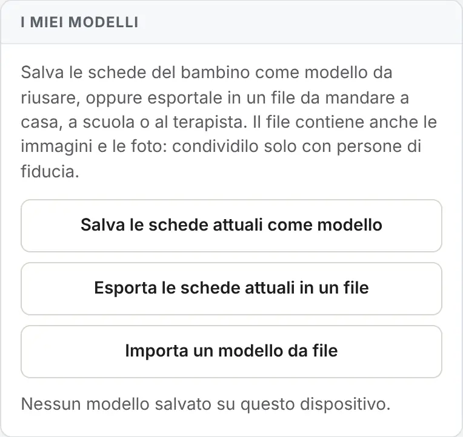
- Salva le schede attuali come modello: tiene una copia su questo dispositivo, da riusare (per un altro bambino o per ricominciare). Fino a 20 modelli.
- Esporta le schede attuali in un file: crea un file con tutte le schede, le immagini e le foto. Lo trovate tra i download (su iPad e iPhone nell’app File) e potete mandarlo a casa, a scuola o al terapista. Anche ogni scheda pronta e ogni modello ha il suo Esporta.
- Importa un modello da file: apre un file esportato da PicSpeak; potete salvarlo tra i modelli oppure usarlo subito.
Il file contiene le foto personali: condividetelo solo con persone di fiducia. Non contiene il PIN né le abitudini d’uso del bambino.
Scambiare schede con altre app (.obf, .obz)
ImpostazioniSchedeScambio con altre app
L’Open Board Format è un formato aperto usato da diverse app di comunicazione (per esempio CoughDrop, Board Builder di Global Symbols, Asterics Grid). Un file .obf contiene una scheda; un file .obz un pacchetto con più schede collegate e le loro immagini.
Se la sezione è chiusa, toccate il suo titolo, con la freccia ▸, per aprirla.
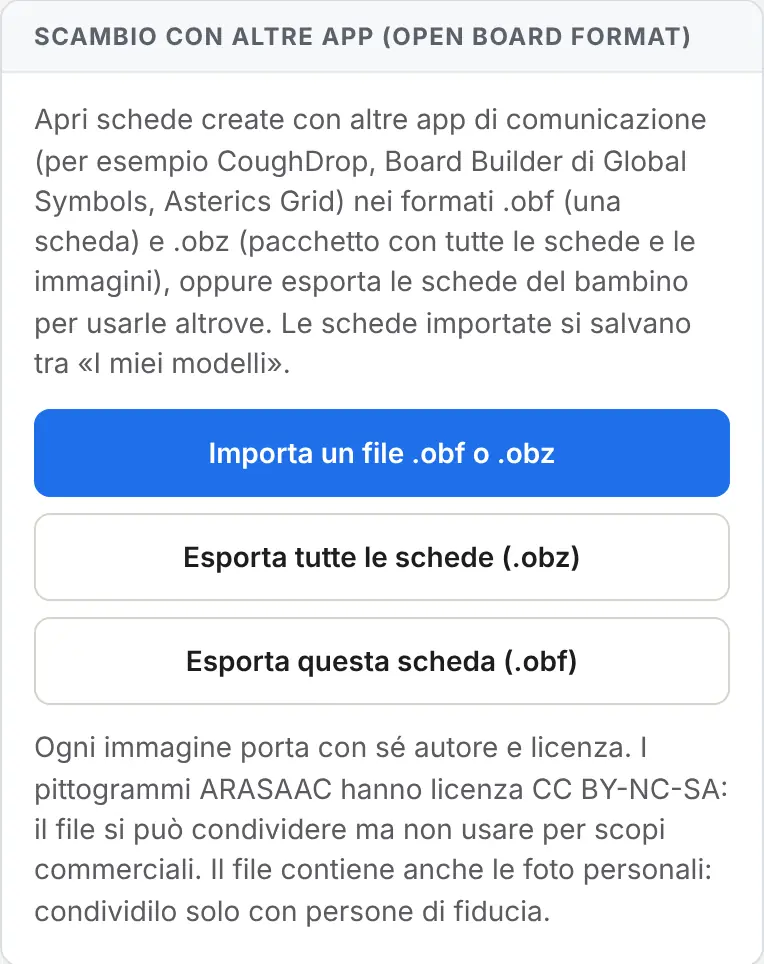
Importare
- Toccate Importa un file .obf o .obz e scegliete il file.
- PicSpeak dice quante schede e tessere contiene e se qualcosa non si è potuto portare.
- Salvatelo tra i vostri modelli oppure usatelo subito.
- Posizioni, colori, parole e frasi pronunciate restano come nell’altra app; il tipo di parola viene proposto da solo.
- Le tessere-comando dell’altra app (cancella, leggi, home…) non si importano: in PicSpeak ci sono già.
- Le schede con più di 12 colonne vengono ridisposte su 12 colonne.
- Le immagini indicate solo con un indirizzo internet non vengono scaricate (tranne i pittogrammi ARASAAC): quelle tessere mostrano la parola e potete scegliere voi un simbolo.
- Autore e licenza di ogni immagine compaiono nei Crediti. Se un’immagine non dichiara una licenza, PicSpeak ve lo dice: controllate di poterla usare prima di condividere le schede.
Esportare
- Esporta tutte le schede (.obz): tutte le schede del bambino, con immagini e cartelle.
- Esporta questa scheda (.obf): solo la scheda aperta.
Ogni immagine porta con sé autore e licenza. Tipo di parola, tessere bloccate e griglia fissa tornano uguali se riaprite il file in PicSpeak.
I pittogrammi ARASAAC hanno licenza CC BY-NC-SA: i file si possono condividere ma non usare per scopi commerciali. Contengono anche le foto personali: condivideteli solo con persone di fiducia.
Stampare o salvare in PDF
ImpostazioniSchedeStampa
Una tabella di carta è utile quando il tablet è scarico, al mare, in piscina o a scuola.

- Scegliete Questa scheda (quella aperta) oppure Tutte le schede (una per foglio, a partire dalla Home).
- Scegliete la misura delle tessere: «Adatta» riempie il foglio; 3, 4 o 5 cm danno tessere di misura precisa, utili anche per ritagliare uno scudo (keyguard).
- Toccate Stampa o salva in PDF: si apre la finestra di stampa del browser.
- Per il PDF scegliete «Salva come PDF» come stampante; su iPad e iPhone toccate il pulsante di condivisione nell’anteprima e salvate nell’app File.
Le tessere mantengono posizione e colori; quelle nascoste non si stampano. In fondo a ogni foglio c’è il credito dei pittogrammi, come chiede la licenza.
Dispositivo, sicurezza e dati
Installare come app e usarla senza internet
ImpostazioniGeneraleInstalla PicSpeak come app
- Seguite le istruzioni mostrate per il vostro dispositivo. Se il pulsante non compare, aprite il menu del browser (⋮ o …) e scegliete «Installa PicSpeak», «Aggiungi alla schermata Home» oppure «Salva e condividi → Installa pagina come app».
- L’icona compare nella schermata Home: PicSpeak si apre a schermo intero e funziona anche senza connessione.
Internet e consumo dati
PicSpeak funziona sempre senza internet con i simboli già salvati. Internet serve solo per cercare simboli nuovi e per gli aggiornamenti (pochi KB). In ImpostazioniGeneraleRicerca online di nuovi simboli scegliete Attiva, Solo Wi-Fi oppure Disattivata. Con «Solo Wi-Fi», su iPad, iPhone e PC PicSpeak chiede conferma prima di usare internet.
Tenere PicSpeak sempre aperto e a schermo intero
Tutto si trova in ImpostazioniSicurezzaApp sempre aperta, visibile e a schermo intero. Lì PicSpeak riconosce il dispositivo e mostra per prime, già aperte, le istruzioni giuste; quelle degli altri sistemi si aprono toccandone il nome.
Le due opzioni di PicSpeak
- Schermo sempre acceso: finché PicSpeak è aperto e in primo piano lo schermo non si spegne da solo. Consuma più batteria, quindi conviene tenere il dispositivo in carica. Se il risparmio energetico lo impedisce, si riattiva al tocco successivo.
- Schermo intero: nasconde le barre del browser e del sistema. Se si esce (tasto Esc o un gesto del sistema), PicSpeak torna a schermo intero al tocco successivo; mentre le impostazioni sono aperte non lo forza.
Alcuni browser non permettono una delle due opzioni (per esempio lo schermo intero su iPhone): in quel caso sotto l’opzione compare una frase che lo spiega, e valgono le impostazioni del dispositivo descritte qui sotto. Installare PicSpeak come app (vedi sopra) toglie già la barra degli indirizzi.
iPad e iPhone: Accesso guidato
Impedisce di uscire da PicSpeak senza un codice.
- Aggiungete PicSpeak alla schermata Home e apritelo da lì.
- Aprite Impostazioni → Accessibilità → Accesso guidato e attivatelo.
- In «Impostazioni codice» scegliete un codice (può essere diverso dal PIN di PicSpeak).
- In «Blocco automatico schermo» scegliete «Mai», così lo schermo resta acceso durante l’Accesso guidato.
- Aprite PicSpeak e premete tre volte il tasto laterale (iPhone), il tasto superiore (iPad) o il tasto Home.
- In «Opzioni» potete disattivare i tasti del volume, poi toccate «Avvia».
- Per uscire premete di nuovo tre volte, inserite il codice e toccate «Termina».
Android: Fissa app
- Installate PicSpeak e apritelo dalla sua icona.
- Aprite le Impostazioni di Android → Sicurezza (o «Sicurezza e privacy») → Avanzate o «Altre impostazioni» → Fissa app e attivatela, insieme alla richiesta del PIN per sbloccare.
- Aprite PicSpeak, poi la schermata delle app recenti: scorrete dal basso fino a metà schermo e tenete premuto, oppure toccate il tasto ▢.
- Toccate l’icona di PicSpeak in alto e scegliete «Fissa».
- Per uscire scorrete verso l’alto e tenete premuto (con i tasti: Indietro e ▢ insieme), poi inserite il PIN del telefono.
I nomi dei menu cambiano un po’ tra le marche: se non trovate la voce, scrivete «fissa» o «blocco app» nella ricerca delle Impostazioni.
Windows e Mac: app a schermo intero
- Installate PicSpeak come app e apritelo dalla sua icona.
- Attivate «Schermo intero» e «Schermo sempre acceso» in PicSpeak (su Windows anche il tasto F11 attiva lo schermo intero; sul Mac il pulsante verde in alto a sinistra della finestra).
- Perché lo schermo non si spenga mai: su Windows Impostazioni → Sistema → Alimentazione (o «Alimentazione e batteria») e scegliete «Mai» per lo spegnimento dello schermo; sul Mac menu Apple → Impostazioni di Sistema → Schermata di blocco e scegliete «Mai» nelle voci che spengono lo schermo quando è inattivo.
- Per uscire dallo schermo intero premete Esc.
Windows ha anche una modalità chiosco («Accesso assegnato», solo nelle edizioni Pro, Enterprise ed Education), ma in quella modalità Microsoft Edge cancella i dati a ogni uscita e le schede del bambino andrebbero perse: per questo con PicSpeak non la consigliamo. Il Mac non ha una funzione per bloccare una sola app: se serve un blocco vero, la scelta più sicura è un iPad con Accesso guidato.
Sapere dove restano i dati
Tessere, foto e impostazioni di tutti i profili restano solo su questo dispositivo, nel browser. Non ci sono account e nessun dato della persona viene inviato su internet: quando cercate un simbolo esce soltanto la parola cercata. L’unica eccezione la decidete voi: se collegate il backup online, una copia va nel vostro Dropbox, e solo lì.
Cancellare i dati di navigazione del browser per questo sito cancella anche le tessere personalizzate. Salvate ogni tanto un backup completo (vedi Fare un backup e ripristinarlo) e conservatelo in un posto sicuro.
Fare un backup e ripristinarlo
Il backup è un unico file .picspeak con tutto il lavoro fatto: schede con immagini e foto, abitudini d’uso e contesti, modelli salvati, aspetto e impostazioni. Serve per non perdere nulla e per passare a un altro dispositivo. Il PIN non entra mai nel file.
Salvare un backup
- Sbloccate le impostazioni e aprite ImpostazioniBackup e ripristino.
- In Backup locale toccate Salva backup….
- Scrivete il nome del profilo: meglio un soprannome o le iniziali che nome e cognome. Compare
nel nome del file, insieme a data e ora (per esempio
PicSpeak-Luca-2026-11-23-2130.picspeak), così si capisce subito di chi è il backup e quando è stato fatto. - Se volete, scrivete una password (almeno 4 caratteri, meglio 8 o più) e ripetetela. È facoltativa: lasciando vuoti i due campi il backup si salva senza password. Anche con la password restano leggibili il nome del profilo e la data, che servono a riconoscere il file.
- Toccate Salva backup. Il file va nella cartella Download; su iPad e iPhone si sceglie dove tenerlo nell’app File.
Prima di consegnare il file PicSpeak lo riapre da solo, come farebbe un ripristino, e controlla che ci siano tutte le schede, tutti i modelli e tutte le immagini. Se qualcosa non torna rifà il backup da capo; solo se non riesce nemmeno così compare un avviso e il file non viene salvato.
Sotto il pulsante compare la data dell’ultimo backup salvato da questo dispositivo per il profilo in uso. Il nome del profilo si può cambiare anche con Cambia…, accanto a «Nome del profilo».
Il file contiene foto e abitudini del bambino: conservatelo con cura. Se mettete una password e la dimenticate, il backup non si può più aprire: nessuno può recuperarla.
Ripristinare un backup
- In Ripristina un backup toccate Apri backup… e scegliete il file .picspeak.
- Se il backup ha una password, scrivetela.
- PicSpeak mostra di chi è il backup, quando e da quale dispositivo è stato salvato e cosa contiene, e chiede
dove ripristinarlo:
- In un profilo nuovo: si crea un profilo con il nome del backup e tutto il suo contenuto; il profilo in uso resta com’è e lo ritrovate in Profili. È la scelta evidenziata quando il backup è di un’altra persona. Se c’è già un profilo con quel nome, il nuovo prende un numero, per esempio «Luca (2)».
- Nel profilo in uso: il backup prende il posto del profilo in uso. È la scelta evidenziata quando il backup ha lo stesso nome del profilo in uso.
- Nel profilo in uso scegliete poi Ripristina tutto oppure Scegli cosa ripristinare.
Ripristina tutto sostituisce tutto quello che c’è con il contenuto del backup. Prima di confermare potete toccare Prima salva un backup di adesso. Il PIN resta quello del dispositivo.
Con Scegli cosa ripristinare decidete parte per parte; quelle lasciate su «No» non cambiano:
- Schede: Sostituisci (le schede di adesso restano recuperabili da SchedeRecuperoRipristina le schede di prima) oppure Aggiungi (le schede del backup entrano come una cartella nella Home, con il nome del profilo e la data).
- Abitudini d’uso e contesti: Unisci (i conteggi si sommano, i contesti con lo stesso nome si aggiornano) oppure Sostituisci.
- Modelli salvati: si aggiungono a quelli che ci sono già.
- Aspetto e Altre impostazioni: prendono il posto di quelli di adesso.
Il ripristino non si blocca mai: se il file si è rovinato (per esempio durante una copia), PicSpeak recupera tutto quello che può e alla fine dice cosa mancava. Le tessere con un’immagine rovinata mostrano la parola e l’immagine si rimette dalla modifica della tessera.
Alla fine PicSpeak si riavvia. Restano fuori dal backup la scelta sull’uso di internet, che rimane quella del dispositivo, e i pacchetti di simboli scaricati (Mulberry, OpenMoji): se servono, un avviso ricorda di riscaricarli da ImpostazioniSimboli. Anche le emoji Twemoji, che si cercano su internet, restano accese o spente come erano su questo dispositivo: se nel backup erano accese, un avviso lo ricorda e si possono attivare dalla stessa pagina.
Per una copia che si salva da sola, senza pensarci, vedete Backup online su Dropbox.
Backup online su Dropbox
Con il backup online PicSpeak salva da solo una copia di tutto nel vostro Dropbox mentre lo usate: schede con immagini e foto, abitudini d’uso e contesti, modelli salvati, aspetto e impostazioni. Il PIN non entra mai nella copia. Basta un account Dropbox, anche gratuito.
PicSpeak usa solo la sua cartella Applicazioni/PicSpeak nel vostro Dropbox: non
vede, non modifica e non cancella nessun altro file. Lo garantisce Dropbox stesso.
Collegare Dropbox
- Sbloccate le impostazioni e aprite ImpostazioniBackup e ripristino.
- In Backup online toccate Collega Dropbox. La pagina di Dropbox si apre in una nuova scheda.
- Entrate con il vostro account Dropbox e toccate Consenti. Dropbox mostra un codice.
- Copiate il codice, tornate a PicSpeak, incollatelo nella finestra Incolla il codice di Dropbox e toccate Collega. La prima copia parte subito.
Il backup online vale per il profilo in uso e solo su questo dispositivo. Se sullo stesso dispositivo ci sono altri profili (per esempio altri bambini), le loro copie non vanno su Dropbox finché non lo decidete voi: nel loro profilo toccate Attiva per questo profilo e scegliete l’account.
- Potete usare un account già collegato su questo dispositivo (lo stesso Dropbox di un altro profilo)…
- …oppure Collega un altro account Dropbox, per esempio quello di un’altra famiglia su un tablet di scuola. Al collegamento gli date un nome (per esempio «Dropbox famiglia Bianchi») per riconoscerlo: PicSpeak non chiede a Dropbox né il nome né l’email.
Scollega spegne il backup online solo per quel profilo; se nessun altro profilo usa lo stesso account, PicSpeak perde anche l’accesso a quel Dropbox. Su un altro dispositivo si collega allo stesso modo. Accanto al pulsante c’è il link Privacy, con due righe su cosa succede ai dati.
Come si salvano le copie
- Copia aggiornata: si salva da sola un paio di minuti dopo una modifica, e comunque ogni 5 minuti al massimo mentre si usa PicSpeak, e subito quando uscite dalla modalità adulto. Senza internet le modifiche aspettano e partono appena torna la connessione. Se per internet avete scelto Solo Wi-Fi e il dispositivo sa di essere sui dati mobili (succede su Android), le copie automatiche aspettano il Wi-Fi. Con Aggiorna adesso la salvate subito.
- Copie del giorno: ogni giorno in cui si usa PicSpeak resta anche una copia di quel giorno. Si tengono le ultime 10; le più vecchie si cancellano da sole.
- Fotografie: con Salva una fotografia fate una copia di tutto com’è adesso,
con un nome se volete (per esempio «prima delle vacanze»). Resta su Dropbox finché non la cancellate voi
dalla cartella
Applicazioni/PicSpeak. - Prima di un ripristino o di Cancella tutto PicSpeak salva anche una copia di sicurezza (si tengono le ultime 5).
Ogni profilo ha le sue copie, in una cartella con il nome del profilo, per esempio Luca B: così su
Dropbox riconoscete subito di quale bambino sono. Se due profili hanno lo stesso nome, il secondo diventa
Luca B (2). Se cambiate il nome del profilo, la cartella si rinomina da sola. Il nome si vede su
Dropbox: se preferite, usate solo il nome e l’iniziale del cognome (si cambia in Profili).
Non rinominate né spostate a mano le cartelle e i file dentro Applicazioni/PicSpeak.
Sotto il titolo vedete la data dell’ultima copia e se ci sono modifiche in attesa. PicSpeak non chiede a Dropbox né il vostro nome né la vostra email.
Tornare a una copia
- Toccate Ripristina da Dropbox.
- Se su Dropbox ci sono più profili, scegliete quello da ripristinare.
- Scegliete la copia. Sotto ogni voce c’è la data e a cosa serve:
- La copia più recente: tutto com’era all’ultima copia automatica. È la scelta giusta per riavere tutto su un dispositivo nuovo o dopo Cancella tutto. Se ripristinate il profilo che state usando, compare in fondo come Ultima copia (uguale a ora), perché è quasi uguale a quello che avete già.
- Fotografia «…»: le copie salvate da voi, con il nome che avete scritto.
- Copia del giorno: com’era la mattina di quel giorno, per tornare a prima di una modifica sbagliata.
- Copia automatica prima di un ripristino o di una cancellazione: per annullare quell’operazione.
- Da qui si prosegue come in Ripristinare un backup: in un profilo nuovo o in quello in uso, tutto o parte per parte.
Su un dispositivo nuovo, o dopo Cancella tutto, collegate Dropbox e usate Ripristina da Dropbox. Poi scegliete un PIN nuovo.
Lo stesso profilo su più dispositivi
Se il bambino usa PicSpeak su più dispositivi (per esempio il tablet di casa e quello di scuola), potete fare in modo che abbiano le stesse schede e che i suggerimenti tengano conto delle parole usate su tutti.
- Aprite PicSpeak su tutti i dispositivi con internet, così si aggiornano all’ultima versione. Sul primo dispositivo il backup online del profilo deve essere già attivo.
- Sull’altro dispositivo create un profilo nuovo, collegate lo stesso Dropbox e, in Backup online, toccate Scegli il profilo accanto a Usa lo stesso profilo di un altro dispositivo.
- Scegliete il profilo e confermate. Nell’elenco c’è anche il profilo che state usando, segnato «(questo profilo)»: sceglierlo non cambia nulla. Le schede, le foto, i contesti e le impostazioni di quel profilo prendono il posto di quelli del profilo nuovo. Prima PicSpeak salva su Dropbox una copia di com’era il profilo; se non ci riesce, non cambia nulla.
Da quel momento:
- Schede, foto, contesti e impostazioni: quando le cambiate su un dispositivo, arrivano anche sugli altri. Per non disturbare il bambino mentre le usa, arrivano solo quando PicSpeak si apre o torna in primo piano, oppure quando un adulto esce dalla modalità adulto. Restano invece di ogni dispositivo le scelte sullo schermo (schermo sempre acceso, schermo intero).
- Parole usate: ogni dispositivo conta solo le parole toccate su di lui e legge quelle degli altri. Ogni uso conta una volta sola: se il bambino dice «voglio biscotto» 3 volte a casa e 2 a scuola, tutti e due i dispositivi contano 5, per quante volte si scambino le copie. Anche i contesti (per esempio «SCUOLA», dal lunedì al venerdì al mattino) usano le parole di tutti i dispositivi, ognuna nel giorno e nell’ora in cui è stata usata.
- Due versioni diverse: se le schede vengono cambiate su due dispositivi mentre uno dei due è senza internet, quando si ritrovano PicSpeak non sceglie da solo. Appena un adulto entra in modalità adulto compare la finestra Due versioni diverse: scegliete Tieni quella di questo dispositivo o Tieni quella su Dropbox. Quella che non scegliete non si perde: resta tra le copie come Copia automatica prima di un ripristino o di una cancellazione. Finché non scegliete, la stessa domanda resta in Backup online con il pulsante Scegli quale tenere. Le parole usate dal bambino continuano a scambiarsi.
- Se eliminate il profilo da un dispositivo, da quel dispositivo si cancellano anche le parole degli altri dispositivi che aveva scaricato. Su Dropbox le copie restano.
Se un dispositivo si perde o viene rubato
Senza PIN nessuno può cambiare schede o impostazioni. Chi trova il dispositivo potrebbe però toccare le tessere e cambiare i suggerimenti degli altri dispositivi. Per fermarlo:
- Su un altro dispositivo, in Backup online, toccate Vedi i dispositivi. Per ogni dispositivo vedete il nome (o il tipo, per esempio «iPad, Safari») e quando ha inviato qualcosa l’ultima volta. Con Dai un nome su «Questo dispositivo» potete chiamarlo per esempio «Tablet di scuola»: il nome si cambia solo dal dispositivo stesso.
- Toccate Escludi accanto a quello perso e confermate. Le parole usate su di lui smettono subito di contare, anche quelle già arrivate, e appena si collega smette di sincronizzarsi.
- Per togliergli anche il collegamento a Dropbox: sul sito di Dropbox aprite Impostazioni, poi
App collegate (indirizzo
dropbox.com/account/connected_apps), e togliete PicSpeak. Il collegamento si toglie così a tutti i dispositivi: sugli altri toccate di nuovo Collega Dropbox (le copie su Dropbox restano). - Se qualcuno ha cambiato le schede (solo con il PIN), tornate a una Copia del giorno di prima con Ripristina da Dropbox.
Il profilo sul dispositivo escluso resta com’era. Se lo ritrovate, potete ricollegarlo con Scegli il profilo.
Un dispositivo nuovo
Sul dispositivo nuovo collegate lo stesso Dropbox. Se lì ci sono già dei profili, PicSpeak chiede subito se volete continuare con uno di questi: l’elenco mostra il nome, la data dell’ultima copia e il dispositivo che l’ha fatta. Scegliete il profilo del bambino: schede, foto, contesti e impostazioni arrivano da Dropbox, e da lì in poi il dispositivo nuovo si sincronizza con gli altri. Su Dropbox non si sostituisce nulla. Per un bambino diverso scegliete invece No, salva come profilo nuovo.
Scollegare
Con Scollega PicSpeak smette di salvare e perde l’accesso a Dropbox. Le copie già salvate restano nel vostro Dropbox. Se Dropbox chiede di ricollegare (per esempio dopo aver tolto il permesso dal sito di Dropbox), toccate Ricollega e rifate i passi di collegamento.
Azzerare l’app
Nella sezione Azzera l’app di ImpostazioniBackup e ripristino ci sono due comandi. Per recuperare un backup si usa invece Ripristina un backup.
Tornare alle impostazioni iniziali
Se avete provato molte regolazioni e volete ripartire da capo:
- Sbloccate le impostazioni.
- Aprite ImpostazioniBackup e ripristino.
- In Azzera l’app toccate Impostazioni iniziali… accanto a «Torna alle impostazioni iniziali» e confermate.
Tornano come alla prima apertura aspetto, colori, sfondo, misura delle tessere, voce, lingua, «Tocco e frase», previsione, stampa, fonti dei simboli, schermo sempre acceso e schermo intero. Restano come sono le schede, le immagini e le foto, le abitudini d’uso, i modelli salvati, la scelta sull’uso di internet e il PIN. PicSpeak si riavvia e torna alla modalità di comunicazione.
Cancellare tutto e ricominciare da zero
Per consegnare il dispositivo a un’altra persona o ripartire davvero da capo, nella stessa sezione c’è Cancella tutto…. Cancella da questo dispositivo schede, immagini e foto, abitudini d’uso, modelli, simboli scaricati, impostazioni e PIN; PicSpeak riparte come la prima volta e alla prossima apertura delle impostazioni si crea un nuovo PIN.
- Il primo avviso ricorda che dopo si potrà recuperare tutto solo da un backup. Se non l’avete ancora fatto toccate Prima salva un backup (vedi Fare un backup).
- Toccate Continua, scrivete il PIN attuale e la parola CANCELLA, poi Cancella tutto.
La cancellazione non si può annullare.
Trovare crediti e licenze
Dal menu dei tre puntini scegliete Crediti (non serve il PIN); gli stessi testi sono in ImpostazioniGeneraleCrediti e licenze. Trovate gli autori dei simboli usati, le licenze e le informazioni sulla privacy.
Se usate i pittogrammi ARASAAC anche fuori da PicSpeak (per esempio stampati), riportate questa frase:
Autore dei pittogrammi: Sergio Palao. Origine: ARASAAC (http://www.arasaac.org). Licenza: CC (BY-NC-SA). Proprietario: Governo di Aragona (Spagna).
PicSpeak è gratuito e non commerciale; il suo codice ha licenza GNU GPL-3.0.
Aiuto
Stampare questa guida
La guida si può tenere su carta, per esempio nel quaderno della logopedia o da lasciare a scuola.
- Toccate Stampa in alto a destra in questa pagina. La guida si prepara per fogli A4, con tutte le immagini e il numero di pagina in fondo.
- Nella finestra di stampa scegliete la stampante, oppure «Salva come PDF» per avere un file. Su iPad e iPhone toccate il pulsante di condivisione nell’anteprima e salvate nell’app File.
- Se la stampante propone un altro formato (per esempio «Letter»), scegliete A4.
Per stampare solo una parte, indicate le pagine nella finestra di stampa. Con il computer si può usare anche la scorciatoia Ctrl+P (su Mac ⌘+P): il risultato è lo stesso.
Se qualcosa non va
- Ho dimenticato il PIN.
- Nella finestra del PIN toccate PIN dimenticato? e scrivete il codice di recupero.
- Il bambino ha aperto il menu.
- Senza il PIN può solo leggere i crediti o questa guida; «Chiudi» o «Torna a PicSpeak» riportano alla tabella. Nulla viene modificato.
- Il menu non si apre.
- Tenete il dito fermo sui tre puntini per 3 secondi interi, finché la barra blu in alto è piena.
- Le tessere sono troppo piccole o troppo grandi.
- Usate − e + nella barra in alto con le impostazioni sbloccate (vedi Ingrandire o rimpicciolire). Con la griglia fissa la misura dipende dal numero di colonne.
- Le immagini e le parole della frase sono troppo piccole.
- Rendete più alta la striscia frase (vedi Ingrandire la frase).
- Una tessera mostra solo la parola.
- Il pittogramma non è stato scaricato: collegatevi a internet e usate Scarica … pittogrammi in ImpostazioniSchedeRecupero, oppure scegliete un simbolo dalla modifica della tessera.
- Non si sente la voce.
- Controllate il volume e l’interruttore silenzioso del dispositivo, poi provate la voce in ImpostazioniVoce. Con «Solo la frase» le parole si sentono solo toccando l’altoparlante.
- Una tessera non risponde al tocco.
- Forse è attivo «Tenere premuto» o «Ignora i tocchi ripetuti» (vedi Tocco).
- Non riesco a spostare una tessera.
- È bloccata: togliete «Posizione bloccata» dalla sua modifica, oppure «Blocca la posizione di tutte le tessere» (vedi Posizioni).
- Ho cambiato troppe impostazioni e non ritrovo quelle di partenza.
- Vedi Tornare alle impostazioni iniziali: schede, foto e PIN restano.
- Ho cambiato tablet, oppure ho cancellato i dati del browser.
- Se avete un backup, aprite Ripristina un backup sul nuovo dispositivo e scegliete «Ripristina tutto». Il PIN si crea di nuovo.
- Ho sostituito le schede per sbaglio.
- ImpostazioniSchedeRecuperoRipristina le schede di prima.
Indice delle parole dalla A alla Z
- Abitudini d’uso
- Accesso guidato
- Aiuto (pulsante)
- Alto contrasto
- ARASAAC
- Azzera l’app
- Backup
- Backup e ripristino
- Bianco e nero
- Blocco delle posizioni
- Cancella tutto
- Cartella
- Cartella senza voce
- Cerca simbolo
- Codice di recupero
- Colori per tipo di parola
- Contesti
- Crediti
- Dati e privacy
- Esporta
- Fissa app (Android)
- Fitzgerald
- Foto personali
- Frase più grande
- Frasi rapide
- Freccia indietro
- Gesti
- Ipovisione
- Griglia fissa
- Importa
- Installare come app
- Internet
- Lucchetto aperto
- Misura delle tessere
- Modalità chiosco
- Modelli
- Mulberry, OpenMoji, Twemoji
- Nascondere una tessera
- Nome del profilo
- .obf / .obz
- Open Board Format
- Percorso
- Ops
- Password del backup
- PIN
- Più persone sullo stesso dispositivo
- Previsione
- Profili
- Pronuncia
- Recupero
- Ripristino delle impostazioni
- Ripristino di un backup
- Schede pronte
- Schermo intero
- Schermo sempre acceso
- Spostare le tessere
- Stampa della guida
- Stampa delle schede
- Stili pronti
- Storico d’uso
- Tenere premuto
- Tremori
- Voce